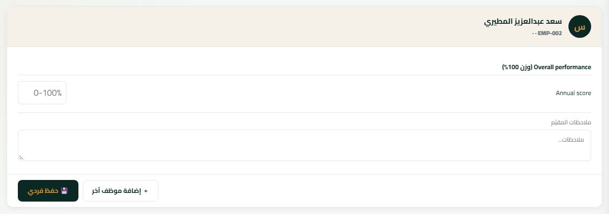
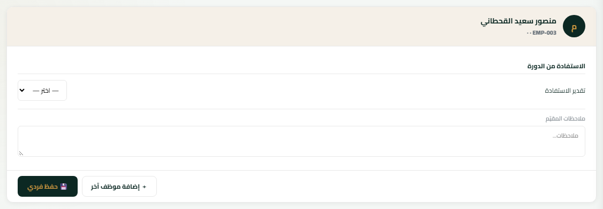
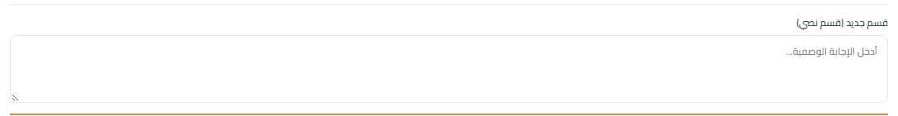
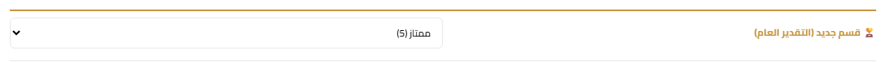
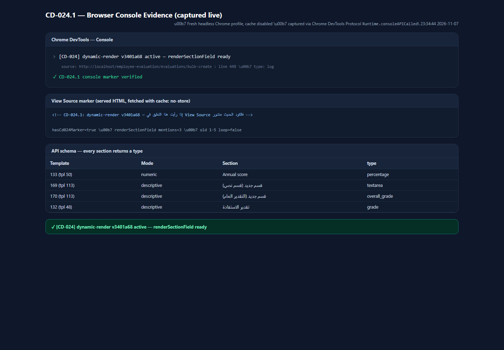

<input type="number" min="0" max="100"> — لا أزرار 1-5

<select> منزلق بالخيارات (جيد / متوسط / ضعيف)

<textarea rows="3" maxlength="1000">

<select> بالسلم الخماسي، وتم اختيار «ممتاز»

لوحة موسومة تعرض نص Console الملتقط فعلياً عبر CDP، مع دليل View Source وAPI.
